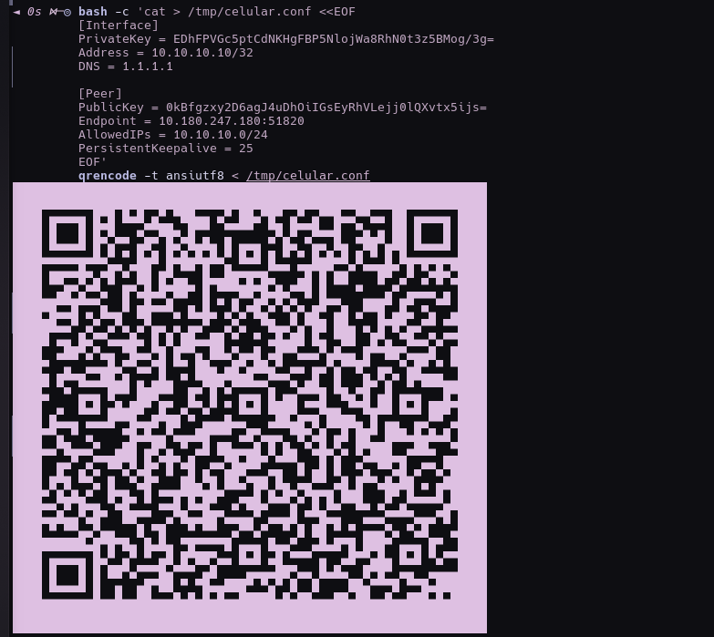
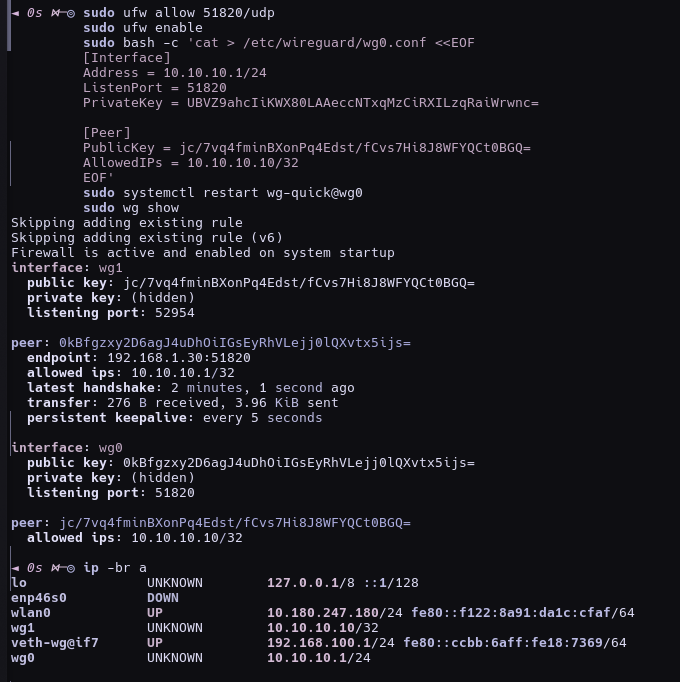
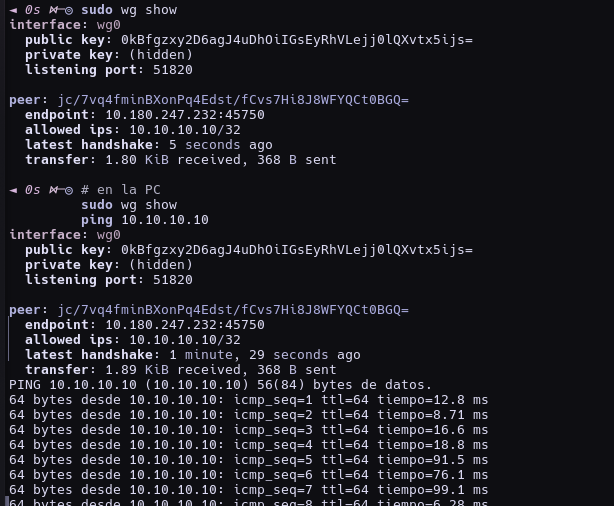
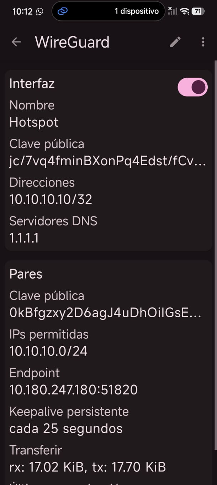
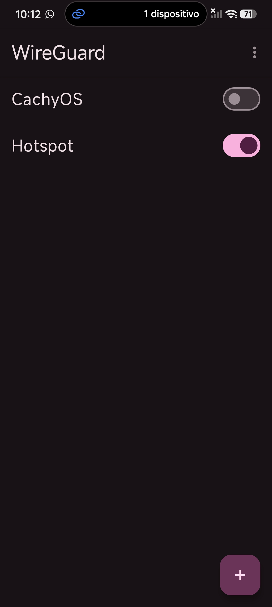

PRACTICA 4 TALLER DE SISTEMAS OPERATIVOS
Creación de una Red Privada Virtual (VPN) con WireGuard en CachyOS
| Presenta | Cristian Muñoz Hinojosa |
| Número de Control | 23121073 |
| Asignatura | Taller de sistemas operativos |
| Docente | Brenda Guadalupe Gonzalez |
| Lugar y Fecha | Morelia, Michoacán — 13 de Noviembre de 2026 |
Implementar y verificar una Red Privada Virtual (VPN) en un sistema operativo Linux moderno, permitiendo la comunicación segura entre un servidor (PC) y un cliente (dispositivo móvil), utilizando un protocolo actual y soportado.
En esta práctica se sustituyó el servicio original propuesto en la guía (PPTP / pptpd en Ubuntu) por WireGuard en CachyOS, debido a que PPTP se considera obsoleto e inseguro.
Una VPN (Virtual Private Network) permite crear un túnel cifrado entre dos o más dispositivos a través de una red pública o local, de modo que la comunicación se comporte como si estuvieran en una misma red privada.
pptpd)/etc/pptpd.conf y /etc/ppp/chap-secretssystemctlSe implementó WireGuard, un protocolo VPN moderno, más simple, rápido y seguro, incluido en el kernel de Linux y soportado en CachyOS y Android.
| Concepto en PPTP | Equivalente en WireGuard |
|---|---|
apt install pptpd | pacman -S wireguard-tools |
/etc/pptpd.conf | /etc/wireguard/wg0.conf |
chap-secrets (usuario/contraseña) | Claves pública y privada |
systemctl start pptpd | systemctl enable --now wg-quick@wg0 |
| Cliente Android PPTP | App oficial WireGuard |
wireguard-tools, systemd, ufw, qrencodesudo pacman -Syu sudo pacman -S wireguard-tools sudo modprobe wireguard wg --version
sudo mkdir -p /etc/wireguard sudo chmod 700 /etc/wireguard sudo bash -c 'cd /etc/wireguard && umask 077 && wg genkey | tee server_private.key | wg pubkey > server_public.key' sudo bash -c 'cd /etc/wireguard && umask 077 && wg genkey | tee client_private.key | wg pubkey > client_public.key'
Archivo: /etc/wireguard/wg0.conf
Equivalencia con la guía:
localip 10.10.10.1 → Address = 10.10.10.1/24remoteip 10.10.10.10-... → AllowedIPs = 10.10.10.10/32[Interface] Address = 10.10.10.1/24 ListenPort = 51820 PrivateKey = UBVZ9ahcIiKWX80LAAeccNTxqMzCiRXILzqRaiWrwnc= [Peer] PublicKey = jc/7vq4fminBXonPq4Edst/fCvs7Hi8J8WFYQCt0BGQ= AllowedIPs = 10.10.10.10/32
echo 'net.ipv4.ip_forward=1' | sudo tee /etc/sysctl.d/99-wireguard-forward.conf sudo sysctl --system sudo ufw allow 51820/udp sudo ufw enable
sudo systemctl enable --now wg-quick@wg0 systemctl status wg-quick@wg0 sudo wg show
[Interface] PrivateKey = EDhFPVGc5ptCdNKHgFBP5NlojWa8RhN0t3z5BMog/3g= Address = 10.10.10.10/32 DNS = 1.1.1.1 [Peer] PublicKey = 0kBfgzxy2D6agJ4uDhOiIGsEyRhVLejj0lQXvtx5ijs= Endpoint = <IP_DE_LA_PC>:51820 AllowedIPs = 10.10.10.0/24 PersistentKeepalive = 25
Endpoint se obtiene con ip -br a y puede cambiar según la red.
En la prueba exitosa se usó el hotspot del celular y la PC se conectó a ese hotspot.
Endpoint.sudo wg show
Resultado exitoso:
latest handshake presentetransfer)interface: wg0 public key: 0kBfgzxy2D6agJ4uDhOiIGsEyRhVLejj0lQXvtx5ijs= listening port: 51820 peer: jc/7vq4fminBXonPq4Edst/fCvs7Hi8J8WFYQCt0BGQ= endpoint: 10.180.247.232:45750 allowed ips: 10.10.10.10/32 latest handshake: 5 seconds ago transfer: 1.80 KiB received, 368 B sent
ping 10.10.10.10
Se obtuvieron respuestas exitosas desde la IP VPN del celular.
| Dispositivo | IP VPN | Rol |
|---|---|---|
| PC (CachyOS) | 10.10.10.1/24 | Servidor VPN |
| Celular (Android) | 10.10.10.10/32 | Cliente VPN |
| Puerto | 51820/udp | Escucha WireGuard |
systemd.ping.51820/udp).Endpoint antes de demostrar.man wg y man wg-quickman systemctl




/etc/wireguard/wg0.confufw allow 51820/udp)sudo wg show con handshakeping 10.10.10.10 exitoso